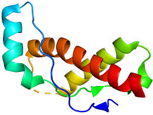

Terminé
2024.6.23
Mécanismes pathogènes et propriétés génétiques des protéines prions
Cette étude explore systématiquement les mécanismes pathogènes et les propriétés génétiques des protéines prions (PrP^Sc), en se concentrant sur leur mécanisme moléculaire d'induction du mauvais repliement des protéines prions normales (PrP^C) par conversion conformationnelle, et discute de l'effet de barrière d'espèce des prions dans la transmission inter-espèces et de leur impact potentiel sur la santé publique.